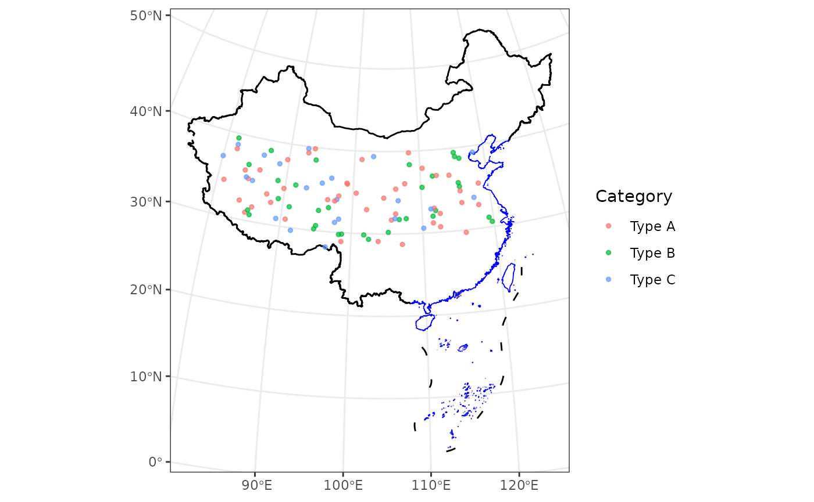

library(ggmapcn)
#> Loading required package: ggplot2
# Define Azimuthal Equidistant projection centered on China
china_proj <- "+proj=aeqd +lat_0=35 +lon_0=105 +ellps=WGS84 +units=m +no_defs"Introduction
This vignette introduces two functions in the ggmapcn package:
geom_loc and geom_vege_raster. These functions
extend the capabilities of the package for spatial data
visualization.
geom_loc: Adding Spatial Point Data Layer with Color by Grouping
The geom_loc function allows you to add spatial point
data to a ggplot, supporting both sf and tabular data frames, with color
mapping based on a grouping variable.
# Create a ggplot with spatial points colored by 'Category'
set.seed(123)
data_sim <- data.frame(
Longitude = runif(100, 80, 120),
Latitude = runif(100, 28, 40),
Category = sample(c("Type A", "Type B", "Type C"), 100, replace = TRUE)
)
ggplot() +
geom_boundary_cn() +
geom_loc(
data = data_sim, lon = "Longitude", lat = "Latitude",
mapping = aes(color = Category), size = 1, alpha = 0.7
) +
theme_bw()
basemap_vege: Vegetation Map of China Layer for ggplot2
The basemap_vege function adds a vegetation raster map
of China with color-coded vegetation types to a ggplot.
# Add vegetation raster of China to a ggplot
ggplot() +
basemap_vege() +
guides(fill = guide_none()) +
theme_bw()
#> <SpatRaster> resampled to 1000776 cells.
#> Warning: Removed 715308 rows containing missing values or values outside the scale range
#> (`geom_raster()`).
basemap_dem: Elevation Map of China Layer for ggplot2
The basemap_dem function adds a digital elevation model
(DEM) raster map of China as a layer to ggplot2.
# Apply Azimuthal Equidistant projection centered on China
ggplot() +
basemap_dem(crs = china_proj, within_china = TRUE) +
geom_boundary_cn(crs = china_proj) +
tidyterra::scale_fill_hypso_c(
palette = "dem_print",
breaks = c(0, 2000, 4000, 6000),
limits = c(0, 7000)
) +
labs(fill = "Elevation (m)") +
theme_minimal() +
theme(legend.position = "bottom")
#> Warning: [vect] returning polygons ignoring additional geometry types. Use
#> 'svc' to get all geometries
#> <SpatRaster> resampled to 1000968 cells.
coord_proj: Transforming Limits for Custom Projections
The coord_proj function is a wrapper around coord_sf
that allows you to specify map limits (xlim, ylim) in longitude and
latitude (WGS84 CRS) and automatically transforms them into the
specified CRS for accurate projections.
Here, the Azimuthal Equidistant projection centered on China is applied, with transformed map limits specified in longitude and latitude.
# World map with Azimuthal Equidistant projection centered on China
ggplot() +
geom_world(fill = "lightblue") +
coord_proj(
crs = china_proj,
xlim = c(60, 140),
ylim = c(10, 50)
) +
theme_minimal()
#> Linking to GEOS 3.10.2, GDAL 3.4.1, PROJ 8.2.1; sf_use_s2() is TRUE